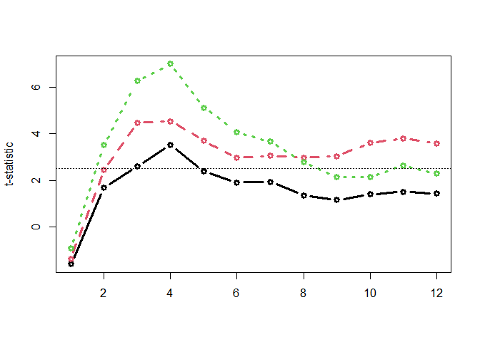

jlmerclusterperm 


Julia GLM.jl and MixedModels.jl based implementation of the cluster-based permutation test for time series data, powered by JuliaConnectoR.

Installation and usage
Install the released version of jlmerclusterperm from CRAN:
install.packages("jlmerclusterperm")Or install the development version from GitHub with:
# install.packages("remotes")
remotes::install_github("yjunechoe/jlmerclusterperm")Using jlmerclusterperm requires a prior installation of the Julia programming language, which can be downloaded from either the official website or using the command line utility juliaup. Julia version >=1.8 is required and 1.9 or higher is preferred for the substantial speed improvements.
Before using functions from jlmerclusterperm, an initial setup is required via calling jlmerclusterperm_setup(). The very first call on a system will install necessary dependencies (this only happens once and takes around 10-15 minutes).
Subsequent calls to jlmerclusterperm_setup() incur a small overhead of around 30 seconds, plus slight delays for first-time function calls. You pay up front for start-up and warm-up costs and get blazingly-fast functions from the package.
# Both lines must be run at the start of each new session
library(jlmerclusterperm)jlmerclusterperm_setup()
See the Get Started page on the package website for background and tutorials.
Quick tour of package functionalities
Wholesale CPA with clusterpermute()
A time series data:
chickweights <- ChickWeight
chickweights$Time <- as.integer(factor(chickweights$Time))
matplot(
tapply(chickweights$weight, chickweights[c("Time", "Diet")], mean),
type = "b", lwd = 3, ylab = "Weight", xlab = "Time"
)
Preparing a specification object with make_jlmer_spec():
chickweights_spec <- make_jlmer_spec(
formula = weight ~ 1 + Diet,
data = chickweights,
subject = "Chick", time = "Time"
)
chickweights_spec
#> ── jlmer specification ───────────────────────────────────────── <jlmer_spec> ──
#> Formula: weight ~ 1 + Diet2 + Diet3 + Diet4
#> Predictors:
#> Diet: Diet2, Diet3, Diet4
#> Groupings:
#> Subject: Chick
#> Trial:
#> Time: Time
#> Data:
#> # A tibble: 578 × 6
#> weight Diet2 Diet3 Diet4 Chick Time
#> <dbl> <dbl> <dbl> <dbl> <ord> <int>
#> 1 42 0 0 0 1 1
#> 2 51 0 0 0 1 2
#> 3 59 0 0 0 1 3
#> # ℹ 575 more rows
#> ────────────────────────────────────────────────────────────────────────────────Cluster-based permutation test with clusterpermute():
set_rng_state(123L)
clusterpermute(
chickweights_spec,
threshold = 2.5,
nsim = 100
)
#> $null_cluster_dists
#> ── Null cluster-mass distribution (t > 2.5) ──────────── <null_cluster_dists> ──
#> Diet2 (n = 100)
#> Mean (SD): -0.039 (1.89)
#> Coverage intervals: 95% [-2.862, 0.000]
#> Diet3 (n = 100)
#> Mean (SD): -0.129 (2.02)
#> Coverage intervals: 95% [0.000, 0.000]
#> Diet4 (n = 100)
#> Mean (SD): 0.296 (3.21)
#> Coverage intervals: 95% [0.000, 5.797]
#> ────────────────────────────────────────────────────────────────────────────────
#>
#> $empirical_clusters
#> ── Empirical clusters (t > 2.5) ──────────────────────── <empirical_clusters> ──
#> Diet2
#> [3, 4]: 6.121 (p=0.0495)
#> Diet3
#> [3, 12]: 35.769 (p=0.0099)
#> Diet4
#> [2, 8]: 32.442 (p=0.0099)
#> ────────────────────────────────────────────────────────────────────────────────Including random effects:
chickweights_re_spec <- make_jlmer_spec(
formula = weight ~ 1 + Diet + (1 | Chick),
data = chickweights,
subject = "Chick", time = "Time"
)
set_rng_state(123L)
clusterpermute(
chickweights_re_spec,
threshold = 2.5,
nsim = 100
)$empirical_clusters
#> ── Empirical clusters (t > 2.5) ──────────────────────── <empirical_clusters> ──
#> Diet2
#> [3, 4]: 6.387 (p=0.0594)
#> Diet3
#> [2, 12]: 39.919 (p=0.0099)
#> Diet4
#> [2, 8]: 33.853 (p=0.0099)
#> ────────────────────────────────────────────────────────────────────────────────Piecemeal approach to CPA
Computing time-wise statistics of the observed data:
empirical_statistics <- compute_timewise_statistics(chickweights_spec)
matplot(t(empirical_statistics), type = "b", pch = 1, lwd = 3, ylab = "t-statistic")
abline(h = 2.5, lty = 3)
Identifying empirical clusters:
empirical_clusters <- extract_empirical_clusters(empirical_statistics, threshold = 2.5)
empirical_clusters
#> ── Empirical clusters (t > 2.5) ──────────────────────── <empirical_clusters> ──
#> Diet2
#> [3, 4]: 6.121
#> Diet3
#> [3, 12]: 35.769
#> Diet4
#> [2, 8]: 32.442
#> ────────────────────────────────────────────────────────────────────────────────Simulating the null distribution:
set_rng_state(123L)
null_statistics <- permute_timewise_statistics(chickweights_spec, nsim = 100)
null_cluster_dists <- extract_null_cluster_dists(null_statistics, threshold = 2.5)
null_cluster_dists
#> ── Null cluster-mass distribution (t > 2.5) ──────────── <null_cluster_dists> ──
#> Diet2 (n = 100)
#> Mean (SD): -0.039 (1.89)
#> Coverage intervals: 95% [-2.862, 0.000]
#> Diet3 (n = 100)
#> Mean (SD): -0.129 (2.02)
#> Coverage intervals: 95% [0.000, 0.000]
#> Diet4 (n = 100)
#> Mean (SD): 0.296 (3.21)
#> Coverage intervals: 95% [0.000, 5.797]
#> ────────────────────────────────────────────────────────────────────────────────Significance testing the cluster-mass statistic:
calculate_clusters_pvalues(empirical_clusters, null_cluster_dists, add1 = TRUE)
#> ── Empirical clusters (t > 2.5) ──────────────────────── <empirical_clusters> ──
#> Diet2
#> [3, 4]: 6.121 (p=0.0495)
#> Diet3
#> [3, 12]: 35.769 (p=0.0099)
#> Diet4
#> [2, 8]: 32.442 (p=0.0099)
#> ────────────────────────────────────────────────────────────────────────────────Iterating over a range of threshold values:
walk_threshold_steps(empirical_statistics, null_statistics, steps = c(2, 2.5, 3))
#> # A tibble: 9 × 8
#> threshold predictor id start end length sum_statistic pvalue
#> <dbl> <chr> <fct> <dbl> <dbl> <dbl> <dbl> <dbl>
#> 1 2 Diet2 1 3 5 3 8.50 0.0792
#> 2 2 Diet3 1 2 12 11 38.2 0.00990
#> 3 2 Diet4 1 2 12 11 41.7 0.00990
#> 4 2.5 Diet2 1 3 4 2 6.12 0.0495
#> 5 2.5 Diet3 1 3 12 10 35.8 0.00990
#> 6 2.5 Diet4 1 2 8 7 32.4 0.00990
#> 7 3 Diet3 1 3 5 3 12.7 0.00990
#> 8 3 Diet3 2 9 12 4 14.0 0.00990
#> 9 3 Diet4 1 2 7 6 29.7 0.00990Acknowledgments
The paper Maris & Oostenveld (2007) which originally proposed the cluster-based permutation analysis.
The JuliaConnectoR package for powering the R interface to Julia.
The Julia packages GLM.jl and MixedModels.jl for fast implementations of (mixed effects) regression models.
Existing implementations of CPA in R (permuco, permutes, etc.) whose designs inspired the CPA interface in jlmerclusterperm.
Citations
If you use jlmerclusterperm for cluster-based permutation test with mixed-effects models in your research, please cite one (or more) of the following as you see fit.
To cite jlmerclusterperm:
- Choe, J. (2023). jlmerclusterperm: Cluster-Based Permutation Analysis for Densely Sampled Time Data. R package version 1.1.2. https://cran.r-project.org/package=jlmerclusterperm.
To cite the cluster-based permutation test:
- Maris, E., & Oostenveld, R. (2007). Nonparametric statistical testing of EEG- and MEG-data. Journal of Neuroscience Methods, 164, 177–190. doi: 10.1016/j.jneumeth.2007.03.024.
To cite the Julia programming language:
- Bezanson, J., Edelman, A., Karpinski, S., & Shah, V. B. (2017). Julia: A Fresh Approach to Numerical Computing. SIAM Review, 59(1), 65–98. doi: 10.1137/141000671.
To cite the GLM.jl and MixedModels.jl Julia libraries, consult their Zenodo pages: